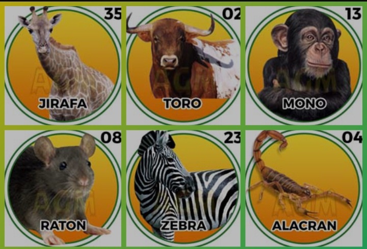
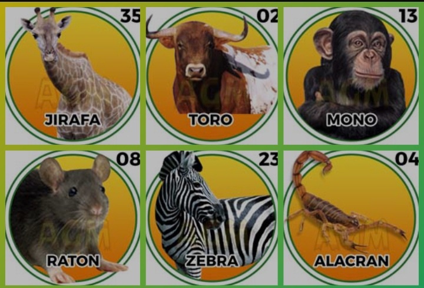

Datos Animalitos: Resultados de lotería de Animalitos, Revisa los resultados de los sorteos de animalitos de hoy de Lotto Activo.
Obten aquí los ultimos y mas actuales resultados de los juegos de loto más populares en Venezuela como Animalitos de Venezuela, Loterías de Venezuela, Temrinales de Venzuela y Triples de Venezuela entre otros juegos de lotería y terminales de juego disponibles en el pais sudamericano de Venezuela en nuestro sitio web de resultados de juegos de loto en vivo y en vivo para tu comodidad y disfrute.
Granja Millonaria, Loto Activo, La Granjita, Guacharo Activo, datos Granja Millonaria, datos Chance Animalitos, datos Granjazo Millonario, datos Loto Rey,
¿Cómo se juega la lotería de los animalitos en Venezuela?
Venezuela es uno de los países de Latinoamérica con más tradición en juegos de lotería. Y es que, si uno pregunta en las calles de ese hermoso país, muchos nos hablarán de Chance, Lotería de Caracas, Lotería del Zulia, Lotto Quiz, el Kino Táchira y el popular Triple Gordo. Por un asunto de situación país, algunas de esas loterías venezolanas dejaron de operar, pero mientras estás se iban o desistían, un juego de azar basado en el sorteo se apoderaba de muchas regiones del país: hablamos de la lotería de los animalitos. En el siguiente artículo conocerás un poco más de cómo se juega la lotería de los animalitos en Venezuela, donde jugarla en línea y cómo obtener un bono de bienvenida de hasta $145 gratis.
¿Qué es la lotería de los animalitos? La lotería de los animalitos es una lotería de Venezuela con más de medio siglo en el mercado que se distingue de otras loterías nacionales, por hacer el sorteo a través de internet. A diferencia de las antiguas loterías de Venevisión (Kino Táchira, Chance y Triple Gordo) en la que se esperaba un día a la semana para hacer el sorteo, en esta lotería se juegan todos los días de la semana en 3 horarios. ¿Cómo se juega la lotería de los animalitos en Venezuela? Jugar animalitos en Venezuela es muy fácil. Es como Jugar triple gordo por internet. El jugador deberá elegir uno o más animales de una tabla de 36 números, en los que se incluyen los números cero (0) y doble cero (00) o elegir el animal que prefiera. Después de ello, esperar a que llegue la hora estipulada por las autoridades del juego de azar de Venezuela, y esperar el resultado que se dará a conocer una vez se gire la ruleta digital online. Los resultados de la lotería de los animalitos en Venezuela se dan a conocer a través de distintos sitios web.
Dr.Animalitos / 06 jun, 2025
❤️Oración Para La Buena Suerte En Los Negocios:
Señor, en este día acudo a ti en búsqueda de buena suerte en los negocios.
Dame la fortuna necesario para triunfar en cada uno de mis emprendimientos.
Ayúdame a encontrar la prosperidad en cualquier negocio que emprenda.
Haz que las buenas sensaciones me acompañen a cada momento. Cuando la oscuridad se cierna sobre mí, indícame el camino correcto para encontrar de nuevo la prosperidad. Protégeme de los malos augurios de mis enemigos y bendíceme para alcanzar la fortuna. En tus manos encomiendo todos mis propósitos, porque bajo tu gracia encontraré la buena suerte en los negocios. Hágase tu voluntad. Amen.....
Resultados de lotería de Animalitos, Revisa los resultados de los sorteos de animalitos de hoy de Lotto Activo.
Obten aquí los ultimos y mas actuales resultados de los juegos de loto más populares en Venezuela como Animalitos de Venezuela, Loterías de Venezuela, Temrinales de Venzuela y Triples de Venezuela entre otros juegos de lotería y terminales de juego disponibles en el pais sudamericano de Venezuela en nuestro sitio web de resultados de juegos de loto en vivo y en vivo para tu comodidad y disfrute.
Granja Millonaria, Loto Activo, La Granjita, Guacharo Activo, datos Granja Millonaria, datos Chance Animalitos, datos Granjazo Millonario, datos Loto Rey,
juegos de animalitos venezuela, animalitos venezuela, loterías venezuela, triples venezuela, terminales venezuela, lotos venezuela, juegos al azar, resultados, sortoes, datos, loteria,resultados,animalitos,triple,lottoleon,ruleta,lotto,lotofortuna,activo,activa,sorteo,truco,grantruco,suerte,loteriadehoy,caracas,tachira,zulia,leon,chance,azar